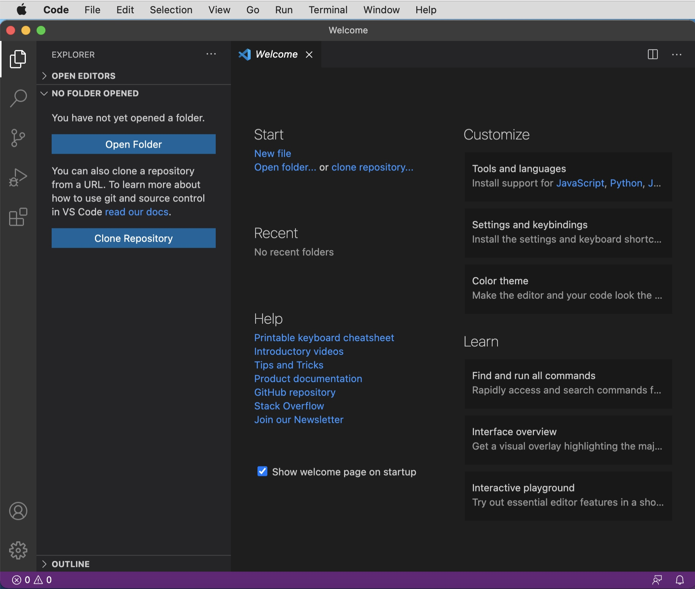

在macOS上用VSCode写C++代码 5 开启VSCode的大门¶
（因为这一课内容比较多，可能会分为上下两部分）
用终端写代码¶
首先我们要写代码，然后将其编译为二进制可执行文件。这样我们的代码就可以在电脑上跑起来。
第一次进行这个操作，我们还是用原始的方法（用终端）来做；之后再用VS Code去简化这个流程
写代码¶
（我们尽可能用终端和命令来进行操作，逐渐熟练这些东西之后你会发现这比鼠标点击/切换来切换去要快/方便很多）
cd到桌面mkdir Cpp，cd进去。注意：关于编程的任何路径尽量不要出现空格，这是因为shell在解析你的命令时会用空格隔开各种参数，如果你的路径中有空格，同时你又处理不得当，shell可能会将其分为两部分。这里我推荐大家在新建文件夹时或给文件起名字的时候都不带空格，或者将空格改为下划线_，这样能有效避免一些错误。
touch``hello.cpp、vim打开编辑（如果你不熟悉vim那还是直接双击用文本编辑器（open hello.cpp（如果open打开了别的应用，⌘I更改设置；或者open hello.cpp -a textedit.app））吧、我这里只是用vim演示一下，和用macOS自带的文本编辑器写是一样的）、保存退出
| C++ | |
|---|---|
1 2 3 4 5 6 7 8 | |
接下来是把代码文件编译成二进制可执行文件。
g++编译¶
用什么来编译代码呢？当然是用程序了。/bin/date可以显示当前的时间，/bin/mkdir可以创建一个新的空文件夹；那什么程序能将cpp代码编译为我们想要的二进制可执行文件/程序呢？
g++。是的，这个程序的名字就是g++，它的功能是：将cpp代码编译为二进制可执行文件。
注：不过刚刚一直在说编译，什么是编译？简单来说，你写的后缀为.cpp的文件是文本文件，里面可能还引用了一些头文件（也是代码文件、文本文件）；编译就是将这些东西链接起来，转换为一堆机器码使得电脑硬件可以直接执行。（注：这里说的编译严格一些应该指编译链接；更严格的过程放在本课最后了）
注：如果对编译器不感兴趣，你只需要知道：g++将cpp代码编译为二进制可执行文件 这点就够了。如果你感兴趣，可以看一下这节课讲稿最后的补充资料。
下载必要的命令行工具¶
那么在哪里下载g++这个程序呢？
苹果的开发集成工具是Xcode.app，其中就带着一堆的命令行工具，那么我们可以直接在App Store下载Xcode.app。不过你打开一看，12G！！太大了吧。如果你不从事苹果平台的软件开发，只是为了一个g++（可能也就1、2MB）下载Xcode这么大的东西占电脑的存储空间，实在划不来。那怎么办呢？
（直接在App Store下载Xcode）

苹果也考虑了这种情况，所以在苹果官方开发者的网站上会有单独的命令行工具的下载。这个大小只有大概400MB，还算比较小（不过其实装好需要2.5G左右的空间，这个确实无法避免啦）
| Text Only | |
|---|---|
1 | |

注：其实也可以先尝试g++ --version，然后终端弹出提示说要下载g++。但是由于网络原因，我推荐大家直接安装Command Line Tools，之后在调试Cpp代码的时候也会用到。（在你使用MATLAB的时候也会需要安装Command Line Tools哦，所以现在就装了吧）
第一次编译和执行¶
安装好后，我们直接编译就好了。可以先执行which g++看看shell怎么解析这条命令，发现返回了一个路径/usr/bin/g++，也就是说，虽然g++这个程序在/usr/bin/g++，但你用一个单词/命令告诉终端终端就会知道你要执行的程序在这里（与环境变量相关，/usr/bin在环境变量中）
编译：执行：
| Bash | |
|---|---|
1 | |
ls发现目录下多了一个a.out文件。这个文件就是我们需要的可执行文件。
接下来执行：绝对路径（拖移、⌥复制路径、⌘⌥C复制路径、根据路径栏自己写路径）；相对路径：不能直接a.out（因为shell觉得这是个命令但是它又不认识），需要./a.out
| Bash | |
|---|---|
1 2 3 4 5 6 7 8 9 10 11 12 13 14 | |
给a.out改个名字¶
给g++添加-o参数
| Bash | |
|---|---|
1 2 | |
| Bash | |
|---|---|
1 2 | |

观察图标，发现系统觉得hello是二进制文件，但是hello.out不是。这就要说到我们之前提到的文件后缀名的事情了。文件的后缀名是文件名的一部分，可有可无，但这个后缀名会告诉系统它用什么应用程序去打开这个文件。双击hello发现系统打开了终端，但是双击hello.out发现系统并不知道怎么打开这个文件（其实这个.out相当于Windows里面的可执行文件.exe）
大家用Cpp代码生成可执行文件的时候，文件名带不带后缀都可以（不带是因为macOS中二进制可执行文件本身就不带后缀）。如果要带，你就用默认的.out，别用别的（举例：你改成exe后缀，用./hello.exe的话，shell也会把这个文件当作二进制可执行文件，但毕竟.exe是Windows系统的可执行文件的后缀，这么用之后可能会造成混淆，所以就用默认的）。
我们在后面对于用g++编译生成的可执行文件都会带上.out后缀，到后面使用VS Code的时候你就知道原因了。推荐大家也将Cpp代码编译出的二进制文件带上.out后缀
这里关于后缀名说的比较多，是因为我发现很多同学都不知道后缀名的含义，总是有同学问我能不能在macOS上直接打开.exe的程序，当然不行，数据的组织方式不一样，两个文件的性质就不一样。能不能直接把.docx后缀的文件直接改成.pdf转成pdf，后缀名决定了系统用什么应用程序打开文件，你改后缀的话只会让另一个应用程序打不开原本的文件；正确的做法是用专门的应用程序去转换文件内部的数据组织方式，而不是直接更改后缀。
吐槽不爽的地方¶
第一次写代码编译就结束了，大概是：打开终端，写代码，g++编译。整个过程还算简单。
但是有可以吐槽的地方。比如文本编辑器会自动给我大写、文本编辑器没有高亮显示，写代码就真的只是黑白的太难看了、而且我需要不断在终端和文本编辑之间来回切换，这体验确实有点不爽啊。vim的更改保存退出这么复杂……有没有优雅一点的方式呢？？？当然…有！
认识VS Code¶
那我们就要引出本次教程的主角VS Code了，全名是Visual Studio Code.app。我们在微软VSCode官网直接下载macOS平台的最新版本即可（百度搜索第一条就是）

在下载的时候我们简单介绍一下VS Code。还记得我们刚刚的文本编辑器吗？就是可以用键盘把字符敲上去，然后它给你在屏幕上显示出来的那个应用程序。其实VS Code也就是这样的一款编辑器，但是它提供的东西更多：代码补全、代码提示、代码高亮、自定义设置、插件管理、自动化流程，内置继承终端（Integrated Terminal）、版本控制（Git）、资源管理、调试窗口等。
VS Code的优点¶
要说VSCode相比于其他的编辑器哪里好：
- 开源（版本迭代快，功能齐全）：开源意味着不是一个团队在开发，而是所有使用者都可以为
VS Code的发展做出一些贡献 - 轻量（250MB左右，比Xcode小太多了）
- 几乎可以用来编写所有语言、甚至可以用来写文档：比如我们接下来就要用
VS Code来写Cpp代码；如果你要学python，那么也可以直接用VS Code；各种脚本……只要安装了相应的的插件，VS Code就能为你提供优雅的编辑/敲代码体验。另外，VS Code甚至可以用来写markdown、写LaTeX。只要是关于文本编辑/代码编辑，VS Code都有相应的插件去支持。 - 降低了编辑器的学习成本（上一点的好处）。不需要上手不同的编辑器，只需要掌握
VS Code的基本用法，以后新学习的语言都可以用VS Code（除了一些大型工程：你要开发Windows软件那还是用Visual Studio，你要开发macOS、iOS程序那肯定还是Xcode.app）。我的话，用VS Code写Cpp、写python爬虫、写Applescript脚本、shell脚本、开发网站前后端、啊还有写markdown；VS Code帮我省了学习使用新编辑器、适应新开发环境的时间 - 个性化配置程度高。你想打造怎样的编辑器，
VS Code通过内置的设置和插件市场基本都可以满足你的需求。如果确实满足不了怎么办？那你自己开发一个插件、自己去为这个软件添加一些功能呗（开源）
VS Code界面认识¶
解压安装好VS Code之后，双击打开。

（调整窗口大小⌘- ⌘= 全屏）（提一下安装中文、但还是用英文：因为我相信大家的英语水平，毕竟大家从小都在学；学编程英文是很重要的，在下节课、下下节课，我们会直接去看插件的英文介绍，去看说明配置文件写法的英文文档；毕竟这些东西，英文是第一手的，你等别人翻译出来，要不就是过时了，要不就是不准确没法表达原文档的意思。）
认识边栏：主要是第一个和最后一个。
从上到下分别是资源管理器（类似访达）、搜索（全局搜索）、版本控制、运行与调试、插件市场（下载和管理插件的地方）
用VS Code编写代码¶
删除桌面之前有的Cpp文件夹。打开文件夹，在桌面新建Cpp文件夹并打开。（或者将文件夹拖拽到VS Code的程序坞图标上）
点击按钮新建文件hello.cpp，敲代码上去。
提示安装插件C/C++，安装（也可以到插件市场安装）


还有另外一个下载。等待下载完成
（代码故意敲的很乱）引出格式化，只是用快捷键和右键去格式化而已（后面再引入格式化风格和快捷键绑定修改）
在集成终端编译、运行¶
（同上）
回顾¶
VS Code就是简单的编辑器。只不过呢，它将访达、终端、文本编辑放在了一起。同时，它还能显示彩色的代码、还带格式化代码。其实还有很多的功能，我们之后会去探索。
接下来我们会去认识一些插件，再看看VS Code有哪些可以让我写代码更舒适的东西。再下来我们会简单深入g++，去考察它的一些参数，这是为了下节课我们引入插件——Code Runner作铺垫。在这节课的最后，我会带大家认识在VS Code中进行自定义设置和修改快捷键的方法。
简单安装插件¶
在考察g++之前，我们先让VS Code的颜值提升一些！
安装两个插件¶
vscode-icons-mac：调整文件管理器那里的图标
Bracket Pair Colorizer：将白色的括号变为匹配的彩色
介绍颜色主题和插件安装¶
VS Code既然是编辑器，能不能调整整体的界面风格呢？⌘K⌘T（中间松开⌘，再次敲击⌘T；或者不松开，按T，相当于⌘KT）或者左上角菜单
默认的主题只有这么点儿吗？那有没有其他的呢？
举个例子，主题也可以通过插件安装（你不一定要安装哦/安装了不喜欢卸载掉也ok）：Dracula Official，这是听python课的时候讲师（学长）用的主题。
这里主要是想演示一下（标题是简单安装插件），VS Code插件能做的事情很多，你想要什么样的编辑器环境基本都可以通过安装插件解决。我在课程的最后也会推荐一些我常用的插件给大家。
g++的参数讲解¶
设置输出文件名¶
-o
链接文件¶
main_file.cpp：
| C++ | |
|---|---|
1 2 3 4 5 | |
myAdd.cpp：
| C++ | |
|---|---|
1 2 3 4 5 6 7 8 9 10 | |
关于注释：如果你要给函数或类添加注释，比较复杂的一种就是我刚刚写的那一种。调用的时候，鼠标放在函数名上就有提示，输入参数的时候也会有相应的提示。（不过一般一个函数一行可以说清；如果你搞一个大工程可以考虑添加这种注释）
myAdd.hpp：
| Text Only | |
|---|---|
1 2 3 4 5 6 7 | |
链接：在原本的文件后面直接添加要链接的.cpp文件就好了。
注：声明写在.hpp文件中，同时在.cpp文件开头include这份对应的.hpp文件（可能cpp文件里面需要用到自己写的函数或类）。在其他需要使用.cpp中函数或类的文件中include.hpp文件。
注：链接的几份文件中只能有一份.cpp文件中有int main(){ }函数作为程序的执行入口。
错误信息提示¶
我们一起来看一下这篇博客CSDN | gcc中的-w -W和-Wall选项，最重要的是最后一句
因此我们需要在调用g++这个程序的时候添加-W -Wall
添加C++标准¶
-std=c++17
编译优化¶
如果你想让生成的代码文件小一些，运行起来快一些，那么需要开启编译优化。
对优化选项感兴趣的话可以看看CSDN｜gcc -O0 -O1 -O2 -O3 四级优化选项及每级分别做什么优化
（注：如果大家链接的文件不多，那么开了优化和没开优化相比不会多花很多时间；如果大家的代码没有那么长，那其实开不开优化执行时间也不会相差很多。自己去运行程序，开不开优化都无所谓；但是如果你要把可执行文件发给别人用，那还是开O2优化比较好；在大家之后可能会做的Online Judge，就是上传自己写的代码让服务器判断运行内存和时间，的时候，服务器的编译选项基本都是开O2优化。所以我们就开O2优化就行）
调试选项¶
编译型语言和解释型语言：解释型语言一行一行执行，但编译型语言不是，在真正的二进制文件中，执行顺序可能与你所写的代码相差很多。（编译型语言的优势是：执行大概比解释型语言快100倍。）
由于C++是编译型语言，如果你直接编译成可执行文件，那大概是没有希望让调试器（就是用来debug的东西；debug就是查错，看自己写的代码哪里写错了）一行一行过你的代码，因为可执行文件已经和你写的代码有着巨大差距了。因此我们需要添加一个编译选项，让编译得到的可执行文件尽量不要被优化，臃肿一些但附加一些调试信息，让得到的可执行文件尽量接近你写的代码。添加-g参数就可以了。
如果你听说过debug版本和release版本，比如你要查错就用debug版本的可执行文件，要把程序发不出去给别人用就用release版本（体积更小；执行更高效）：这本质上就是编译时有没有-g这一个参数。
感兴趣的话可以阅读CSDN｜gcc的-g选项做了哪些操作
最终结果¶
release：
| Bash | |
|---|---|
1 2 | |
debug：
| Bash | |
|---|---|
1 2 | |
VS Code简单的文本编辑技巧¶
添加注释：⌘/ ⌥⇧A
代码提示：code snippet ⇥ 和 ⌘I（I refers to IntelliSense）
双击选中一个词，三击选中一行
⌥左右 和 ⌘上下左右；⇧光标区域选中；⇧上下左右 和 ⇧⌥左右 和 ⌘⇧上下左右
⌥⌫、⌘⌫；fn⌫
⌘C和⌘X可以对一行生效
⌥点击多处添加多个光标
代码格式化引入settings.json¶
代码格式化风格选择¶
打开设置搜索format google（注：空格隔开搜索关键词），改成我喜欢的Google开源C++代码的格式化风格。

（注：想改什么设置搜索什么单词。eg：font tab window theme）
全局设置与工作区设置¶
什么是工作区¶
在VS Code中一个文件夹就是一个工作区（开始创建的那个桌面上的Cpp文件夹）；在VS Code中，一个文件夹约等于一个项目（Cpp这个文件夹就是供我们学习Cpp使用的项目）。
之后你如果要写python那就再创建一个python文件夹呗，那个文件夹就是python的工作区
全局/用户设置和工作区设置¶
打开设置，可以看到有两栏基本一样的设置。先说工作区设置：工作区设置修改之后只对当前的文件夹（项目）起作用；而用户设置指的是无论你用VS Code打开哪个文件夹（项目），VS Code都会用这些设置；相当于你修改了用户设置，这个设置全局有效，改一次用户设置相当于改了好多个工作区的设置，所以我下面会将用户设置称作全局设置。
注：工作区设置和用户/全局设置同时存在时，工作区的设置起作用/优先级高/覆盖。
使用工作区设置的优点¶
确保你以后在写别的代码（开了别的文件夹/接了新的项目）的时候不会受某次设置的影响
使用工作区设置文件及其优点¶
尝试在用户的设置中用json文件修改代码格式化风格
- 除了默认的设置、被更改的设置都明明白白的被列举了出来
- 多人协同的时候大家都可以使用一样的配置
修改之前的全局设置为工作区设置¶
设置右上角的三个点，查看已经被修改的全局设置（或者搜索时输入@modified，相当于条件筛选）；可以分别看到被修改的全局/用户设置和工作区设置
将代码格式化的选项更改为工作区设置。
在你修改工作区设置的时候VS Code就会帮你自动修改.vscode/settings.json这个文件，这个文件也可以自己去创建。
尝试将一个选项的json复制到settings.json文件并更改。
注：一部分设置不一定针对工作区，比如窗口缩放字体大小，虽然我在教程中将所有的全局设置都改成了工作区设置，但是你在自己实践使用VS Code的时候完全可以不这么做
全局设置json文件¶
看看用户的/全局的那个settings.json在哪里

你也可以通过终端查看到这个文件：
| Bash | |
|---|---|
1 2 3 | |
注意一定要这么写。因为路径中含有空格，空格需要用引号包裹起来；同时还含有家目录~所以不能把~放在双引号里面，否则shell无法解析（一般我们命令文件和文件夹就不要用空格了）

这里的settings.json就是你的用户设置/全局配置存储的地方
修改快捷键¶
（按照自己的喜好修改就行，没必要和我的一模一样）但我介绍的这几个我觉得还是挺常用的
新建¶
新建文件¶
在File菜单下，第一个就是新建文件，快捷键是⌘N。但是尝试之后发现不符合我们的认知。（新建文件是经常用到的操作，我们就别总是用鼠标点了，快捷键一键直达）
对快捷键进行修改，发现新建文件之后可以直接对名字进行修改。
新建文件夹¶
（和访达类似）访达中新建文件夹是⇧⌘N，但是这个快捷键在VS Code却是新开一个窗口。改！
新建窗口¶
发现有一个冲突了。那我们之后新建窗口怎么办啊（比如我做网站开发，前端一个窗口，后端一个或者我要“借鉴”别人的代码；怎么新建窗口呢？）。鼠标点菜单栏；或者我们再设置一个快捷键。
附¶


修改前：

修改后：

窗口管理¶
小技巧¶
⌃⇥
⇧⌘[
⇧⌘]
（以Safari为参照设计）
发现问题并修改¶
发现中文输入法的状态下无法切换相邻的窗口
解决：

自定义访问第几个标签页¶

其他¶
一些快捷键可能和系统快捷键或者一些应用中的全局快捷键冲突了。这时你可以考虑更换一个快捷键
（比如我在电脑中安装了Manico，⌥⌘F这个键被占用了。那我要想在VS Code中使用快捷键来格式化文档，就必须换一个键。我换成了⌥⇧;这样每次右手离开键盘顺手格式化文档对我来说挺方便的）
快捷键的配置文件¶

这个改还挺复杂的，你要是想折腾就找找官方的文档自己看下（好像可以设置快捷键触发的方式）
看一看我的快捷键¶
自己定义快捷键的话，你觉得哪些操作经常用，经常需要用鼠标点击，那就设置一个快捷键吧。
里面的那个Run Code是什么呢？是不是可以用快捷键执行代码呢？是不是就不需要终端敲命令呢？是的。这就要引出我们下一节课要讲的插件：Code Runner。它能够让你省去在终端敲命令的麻烦。
（ps 其实还有一种设置快捷键的方法（简单演示Keyboard Shortcuts [⌘K ⌘S]，⌃⌘space搜索interest），在三个月之前我试讲这一课的时候，确实有必要这样设置一次快捷键，因为VS Code没有给设置绑定快捷键。但是新的版本修了这个bug，所以我就只是简单提一下大家知道这样能给在菜单栏出现的操作添加快捷键就ok了）

但是一般来说所有设置在VS Code里面都有，所以直接在搜索就好了

附：C/C++代码编译过程¶
我们说的编译是指编译的整个过程，这其中实际包括了四个过程cnblog｜gcc 编译过程

附：macOS平台上的编译器¶
如果对编译器不感兴趣，你只需要知道：g++将cpp代码编译为二进制可执行文件 这点就够了。如果你感兴趣，可以看一下下面的补充资料。
GCC：GNU Compiler Collection(GUN 编译器集合)，它可以编译C、C++、JAV、Fortran、Pascal、Object-C等语言。g++是GCC中的GUN C++ Compiler（C++编译器）。g++调用了C++ compiler。
但如果你在终端输入g++ --version，应该会出来clang的提示，而不是GCC。但这并不重要。大概是macOS用了Clang编译器，所以把g++链接到了Clang。Clang和GCC都是编译器，将代码转成可执行文件。g++调用他们从而编译。如果你觉得cpp编译用g++“不太好”，你把之后教程中所有的g++全部换成clang或者clang++就行了。